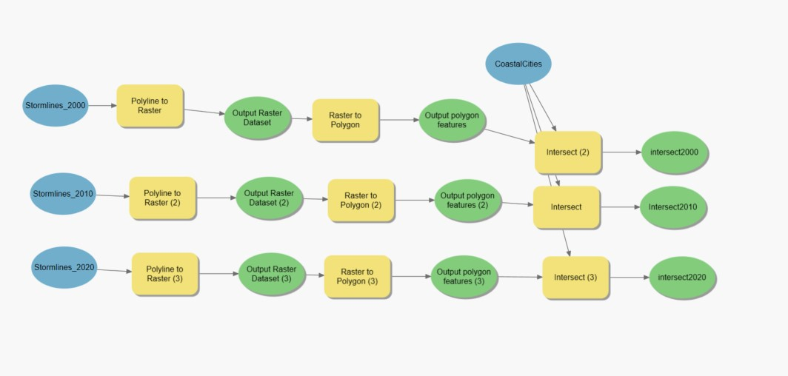

Mitchell Aitken, Julian Cramb, Jackson Cooper
In order to perform a full analysis of hurricanes, we will be analyzing one specific hurricane, it’s specific impacts and causes.
Hurricane Dorian was a category 5 hurricane that swept the Bahamas at the end of the summer of 2019. It formed in August 2019, and lasted a total of 9 days. It caused a total of over 4.5 billion US dollars worth of damage, and 84 fatalities. The hurricane developed with vigorous maximum speeds of 295 kilometer per hour winds. To put this in perspective, the highest recorded wind storm in Alberta saw wind speeds reaching up to 122 kilometers per hour, Hurricane Dorian had wind speeds almost 2 and a half times stronger.


Above, you can see two images. The first image shows a satellite view of the hurricane. In this image you can see the light winds funnel around the eye of the hurricane in a circular pattern at a distance, and the strong winds are right at the eye of the hurricane. The second image shows the tracks of the hurricane and the severity, it derived from a tropical wave in the Central Atlantic and hit it’s peak severity when it striked the Bahamas.
Model builder that takes the polyline data and converts it into polygon data which can then be intersected with the coastal cities.

This Map shows which coastal cities have had a hurricane pass directly through them in the years from 2000-2020, each 10 year segment is displayed by a different symbol.
Model builder that takes the polyline data and converts it into polygon data which can then be intersected with the coastal cities.


This Map shows which coastal cities have had a hurricane pass directly through them in the years from 1950-1970, each 10 year segment is displayed by a different symbol.